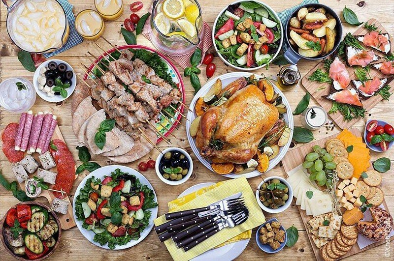

Очередной годовщине первого картофельного бунта посвящается…
Здравствуй, милая картошка-тошка-тошка,
Пионеров идеал-ал-ал!
Тот не знает наслажденья-денья-денья,
Кто картошки не едал!
Прибывшие из Америки растения породили существенную путаницу. Это сейчас нам кажется, что они были в Старом Свете всегда, что, конечно же, не соответствует действительности. Впросак попадали многие. Например, в поэме Алексея Константиновича Толстого «Князь Серебряный» есть удивительно красивое описание склоняющихся подсолнухов, хотя происходящие в поэме события случились значительно раньше, чем в Европе появилось это столь привычное ныне растение. В телесериале «Мастер и Маргарита» на столе у Понтия Пилата – ананас на блюде. Финикийцы, что ли, привезли через Атлантику? Артист Макарский в роли шевалье де Еона лакомится в Москве XVIII века помидорчиками, хотя в те времена томаты выращивали исключительно как декоративное растение, а ярко-красные плоды считались ядовитыми.
Близкий же родственник томата, картофель, примерно в это же время для тех, кто по незнанию готовил плоды, а не клубни, оказывался ядовитым на самом деле. И вполне вероятно, что в России именно отравления плодами картофеля вкупе с действиями правительства, отбиравшего у удельных (то есть – принадлежавших императорской семье) крестьян под картофель лучшие земли, и вынужденным отказом от традиционной и привычной репы (сей продукт уже почти забыт…) и породили картофельные бунты, первый и наиболее сильный из которых произошел в 1834 году…
А задолго до этой даты…
…Инки называли «нашу» картошку «пaпа», а бывший солдат конкистадора Писсаро Педро де Леон, выпустивший в Севилье в 1534 году книгу «Хроник Перу», писал, что это особый вид земляных орехов и что индейцы даже измеряют время в единицах варки «папы» до готовности. Во всяком случае, версия, будто картофель привез в Европу Христофор Колумб, отвергается ныне практически всеми историками: Колумб привез так называемый сладкий картофель, батат. Однако от слова «батат» произошло английское potato. Слово же «картофель» возникло благодаря бельгийцу де Севри, назвавшему новый клубень «тартуфель» из-за, как ему казалось, сходства картофелины с трюфелем.
Массово выращивать картофель как пищевое растение в материковой Европе стали благодаря парижскому аптекарю Антуану Огюсту Парматье. Будучи человеком предприимчивым, Парматье не только научился выращивать картофель, но и продемонстрировал перед королевским двором массу блюд из картофеля. Чтобы французы привыкли к картофелю и чтобы картофель распространился, Парматье на своем поле ставил охрану на день, а ночью – снимал. На памятнике Парматье, установленном на его родине в городе Мондидье, высечено «Благодетелю человечества» и слова Людовика XVI: «Настанет время, когда Франция поблагодарит Вас за то, что Вы дали хлеб голодающему человечеству»…
…Картошка впервые попала в Россию почти за сто сорок лет до первого бунта. Это царь Петр, используя пока еще чуть приоткрытое окно в Европу, прислал из Голландии, персонально фельдмаршалу Шереметеву, мешок картошки и указ немедленно приступить к посадкам. Несомненно, что посадки и были, но – только не картофеля. Мешок, как часто случается, куда-то запропастился, картошка, скорее всего, сгнила…
Впрочем, помимо присланного Шереметеву мешка был и другой. Он попал к прадеду Пушкина Абраму Ганнибалу, прославившемуся помимо всего прочего и тем, что он первым в России провел опыты по селекции и – что не менее важно! – хранению картофеля. Более того – популярный сорт картофеля с фиолетовой кожурой, ныне именуемый в просторечии «синеглазкой», прекрасно подходящий для варки и запекания, «по науке» следует называть «Ганнибал». Правнук же арапа Петра Великого очень уважал приготовленную особым способом картошку, хотя способ этот, по сути, незатейлив. Для того чтобы приготовить картофель по рецепту «нашего всего», надо отварить в подсоленной воде несколько клубней в мундире, остудить, снять кожуру, распустить в сковороде сливочное масло (чем больше, тем лучше), нарезать картофель на ломтики, обжарить до золотистой корочки, а подавать с мелко нашинкованными зеленым луком и укропом.
Прошло сорок лет с первых опытов Абрама Ганнибала, пока в Петербурге, на так называемом Аптекарском огороде, стали выращивать картофель. Урожаи были невелики, продукт – дорог, и позволить себе полакомиться картошкой мог разве что всесильный временщик Бирон. Екатерина II провела через Сенат указ, по которому населению предписывалось повсеместно сажать картошку, завезенную из Франции и разосланную по стране вместе с руководством по ее разведению, озаглавленным «Наставление о разведении земляных яблок, потетес именуемых».
Однако в царствование Екатерины, ее сына и внука недовольство картофелем было подспудным, в открытые бунты не перерастало. Только Николай I, по его собственному признанию существовавший «для упорядочения общественной свободы и предотвращения злоупотребления оной», столкнулся с прямым неповиновением августейшей воле. И чтобы прекратить уничтожение крестьянами посевов и избиение присланных сажать картофель уполномоченных, был вынужден посылать карательные отряды и даже – отдавать приказ стрелять по бунтовщикам картечью.
Так была проиграна народная война за родимую репу. Не помогли и старообрядцы, причислявшие картофель наряду с чаем, кофе и табаком к антихристовым наваждениям, утверждавшие, что те, кто ест «картоху прокляту», всенепременно будут гореть в аду. Как не помогла и красивая легенда, будто картофель на самом деле – яблоко подземного мира, создан дьяволом из зависти к райским плодам и посему проклят Господом. К концу XIX века в России под картофель было отведено почти 1,5 миллиона гектаров. Картошка стала «вторым хлебом», практически – основным продуктом питания для подавляющей части населения. Да и сейчас Россия в числе главных картофелепроизводителей: почетное второе место после Китая.
Ушли в прошлое и картофельные бунты удельных крестьян при «проклятом царизме», и отправка советских граждан «на картошку». Персонаж из фильма «Гараж», профессор и доктор наук, опускавший в каждый пакет отобранной им на овощной базе картошки свою визитную карточку, – персонаж, скорее всего, киношный. Люди из реальной жизни использовали любые лазейки, чтобы просто улизнуть от картофельной повинности, хотя многие, наоборот, пользовались этой возможностью отдохнуть от болота какого-нибудь отраслевого НИИ.
Как же так получилось, что ныне у тружеников села нет потребности в помощи со стороны столичной «интеллигенции»? Как они справляются? Как сложилось, что нынешние овощные склады как небо от земли отличаются от огромных овощных баз прошлого? Куда ушла непролазная грязь, куда подевались кучи подгнившей, подмороженной картошки, которую эмэнэсы давней поры фасовали по бумажным пакетам, где теперь трудятся тогдашние завскладом, хмурые женщины в когда-то синих, выцветших халатах? Перепрофилировались в мерчендайзеров или коротают пенсионные деньки на дачках в районе Рублево-Успенского шоссе? Но как бы то ни было – тридцать четыре копейки за пакет, из трех килограмм смеси комьев земли и уродливых клубней которого в лучшем случае получалось полтора килограмма более-менее приемлемого продукта. Какую «картошку» мы потеряли!
Сегодня есть возможность, помимо «картошки обыкновенной», во многом напоминающей ту, что мы потеряли, найти сорта с белой, желтой, серой, розовой мякотью. Так же многообразна и кожура – от светло-желтой до черной. Разбираться в многообразии сортов рядовому потребителю нет нужды. Стоит лишь запомнить, что картошка с белой и желтой кожурой лучше подходит для варки, розовые и фиолетовые клубни – для жарки. Откуда же пришел тот или иной сорт – тема скорее для селекционеров-профессионалов. Главное – это с толком и аппетитом «намять картошечки». Ну да, ведь все помнят, как пел Владимир Высоцкий:
Значит, так! До Сходни доезжаем,
а там рысцой и не стонать!
Небось картошку все мы уважаем,
когда с сольцой ее намять!
А вот среди едоков картофеля первые места занимают, кстати, вовсе не наши соотечественники. Немцы и американцы, ирландцы и бельгийцы – вот подлинные любители «земляных яблок». Ирландцы вообще оказались первыми европейцами, кто всерьез перешел на картошку. В XVII веке английские колонизаторы начали отъем пахотных земель под пастбища, посему зависимость от картофеля как бедных, так и богатых ирландцев стала повсеместной. Стремясь найти лучшую жизнь за пределами Изумрудного острова, ирландцы обязательно брали с собой мешок картошки. Поэтому в новых территориях, предшествовавших нынешним США, картофель появился довольно хитрым образом – не из Южной Америки, где его родина, а из Европы, из Ирландии. Основа ирландской картофельной кухни конечно же – ирландское рагу, то самое, над которым не устают издеваться англичане, блюдо простое (картофель, лук, морковь, баранина, перец, соль, запекать в горшочке, употреблять с крепким темным пивом…), но вкусное и сытное. Другие же картофельные блюда ирландской кухни в лучшем случае сочетают картофель с селедкой, а так – берут картофель, варят, разминают, добавляют вареную капусту, лук-порей, репу (привет, Россия!), морковь, репчатый лук. Сумрачный ирландский гений! Проза Джойса, Беккета, О’Фаолейна если не базируется на картошке, то вкус этого клубня там чувствуется: от простоты пюре на простокваше до сложностей лучшей прозы ХХ века оказывается один шаг.
Немцы тоже прославились в области картофельной кухни. Тут главным является знаменитый «картофельный салат», куда помимо картошки входят мелко порубленные яблоки, маринованные огурцы, сельдь, а в качестве заправки идут майонез и горчица. Ну, а про бельгийцев и говорить не стоит: своих «Едоков картофеля» Ван Гог писал не где-нибудь, а в шахтерском бельгийском городке.